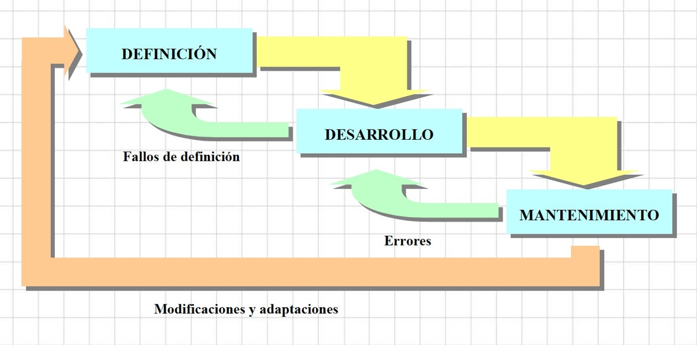
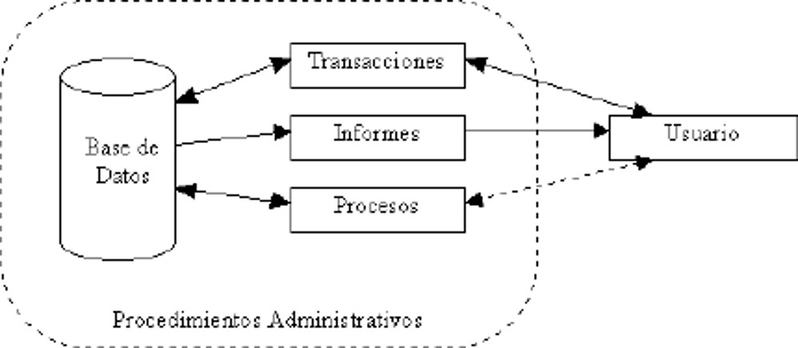

En esta unidad veremos los siguientes temas:
-Fundamentos a la Ingeniería de Software
-Proceso de Ingeniería de Software
-Sistemas de Información
-Proceso del Software
En esta unidad veremos los siguientes temas:
-Proceso del Software(II)
-Introduccion
-Modelos de Proceso de Software
-Metodologia de Software
La Ingeniería del Software es el establecimiento y uso de principios robustos de la ingeniería a fin de obtener económicamente sosftware que sea fiable y que funcione eficientemente sobre maquinas reales.
Una Definicion mas clara del softwar es :
La ingeniería de software es una aplicación práctica del conocimiento cientifico para proveer metodologías y técnicas que ayuden a desarrollar sistemas de software a tiempo, y a su vez que aseguren que el desarrollador cumpla con las expectativas de calidad y permanezca dentro del presupuesto.
Su origen se debe a:
Ingeniería del Sotfware, es el término utilizado por Fritz Bauer en la primera conferencia sobre desarrollo de so-ware patrocinada por el Comité de Ciencia de la OTAN celebrada en Garmisch (Alemania), en octubre de 1968, previamente había sido utilizado por el holandés Edsger Dijkstra en su obra The Humble Programmer
El término “evolución” del software se utiliza desde los sesenta para denominar la dinámica de crecimiento del software.Una definición atribuida a Lehman y Ramil dice que la evolución del software es “todas las actividades de programación que se orientan a generar una nueva versión de un software a partir de una versión anterior operativa.
Actualmente está surgiendo una gran expectativa ante la evolución de la Ingeniería del Software, al ir apareciendo nuevos métodos y herramientas formales que van a permitir en el futuro un planteamiento de ingeniería en el proceso de elaboración de software.
Calidad del Software: Es el grado con el que un sistema, componente o proceso cumple los requerimientos especificados y las necesidades o expectativas del cliente o usuario.
Son las que están relacionadas con el desarrollo del software como funcionalidad, complejidad, eficiencia.Entre las métricas del software tenemos las siguientes: 1. Métricas técnicas: Se centran en las características del software. Aquí medimos la complejidad lógica y el grado de modularidad del sistema. Mide la estructura del sistema, el cómo está hecho.
¿Qué es un proyecto software? Haciendo uso de la definición de proyecto de la guía del PMBOK, y adaptándola a un proyecto so-ware, podríamos definirlo como: “Un proyecto so-ware es un esfuerzo temporal que se lleva a cabo para crear un producto so-ware, servicio TI o resultado único.”
El software puede dividirse en dos grandes categorías: Software de aplicaciones: se usan para proveer servicios a clientes y ejecutar negocios de forma más eficiente. El software de aplicaciones puede ser un sistema pequeño o uno grande integrado. Como ejemplos de este tipo de so-ware estarían un sistema de cuentas, un sistema de planificación de recursos.
Los ingenieros de software deberán comprometerse consigo mismo en convertir el análisis, especificación, diseño, desarrollo, prueba y mantenimiento de so-ware en una profesión respetable y beneficiosa. De acuerdo con su compromiso con la salud, seguridad y bienestar del público, los ingenieros de software deberán apegarse a ocho principios.
Público. Los ingenieros de software deberán actuar consistentemente con el interés público. Cliente y Empleador. Los ingenieros de software deberán actuar de una forma determinada que esté en los mejores intereses de su cliente y empleador consistente con el interés público. Producto. Los ingenieros de software deberán asegurar que sus productos y modificaciones relacionadas logren el más alto estándar profesional posible.
Juicio. Los ingenieros de software deberán mantener integridad e independencia al emitir su juicio profesional. Gerencia. Los gerentes y lideres de ingeniería de so-ftware deberán suscribirse y promocionar un enfoque ético para la gerencia de desarrollo y mantenimiento del so-ware. Profesión. Los ingenieros de software deberán fomentar la integridad y reputación de la profesión consistente con el interés público.
Colegas. Los ingenieros de software deberán ser justos y comprensivos con sus colegas. Interés Propio. Los ingenieros de so-ware deberán participar en el aprendizaje de por vida del ejercicio de su profesión y deberán promover un enfoque ético para el ejercicio de la misma.
Es un sistema de información es un conjunto de elementos interrelacionados con el propósito de prestar atención a las demandas de información de una organización, para elevar el nivel de conocimientos que permitan un mejor apoyo a la toma de decisiones y desarrollo de acciones (Peña, 2006). Conjunto de elementos que interactúan entre sí con el fin de apoyar las actividades de una empresa o negocio. Teniendo muy en cuenta el equipo computacional necesario para que el sistema de información pueda operar y el recurso humano que interactúa con el Sistema de Información, el cual está formado por las personas que utilizan el sistema.
Los sistemas de información, según Peña (2006), tienen 5 elementos importantes, estos son:
- Financieros
- Administrativos
- Humanos
- Materiales
- Tecnológicos
Sin embargo otro autor (s/a, 2008a) menciona que un sistema de información consiste en 3 elementos: humano, tecnología y organización. En teoría de sistemas, un sistema de información es un sistema automatizado o manual que involucra personas, máquinas y/o métodos organizados de recolección, procesos, transmisión, clasificación y divulgación de datos.
